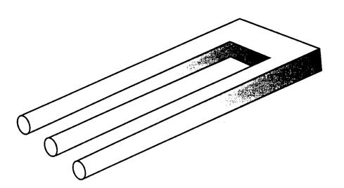

D'altra banda, a la següent figura podeu veure un exemple de dibuix 2D, que demostra que si usem les tècniques clàssiques de dibuix 2D per a modelitzar objectes 3D, podem arribar a representar objectes impossibles, que no existeixen a la realitat (el dibuix 2D pot ser no vàlid):
|  |
Podríeu construir aquest objecte? És un objecte en forma de U?